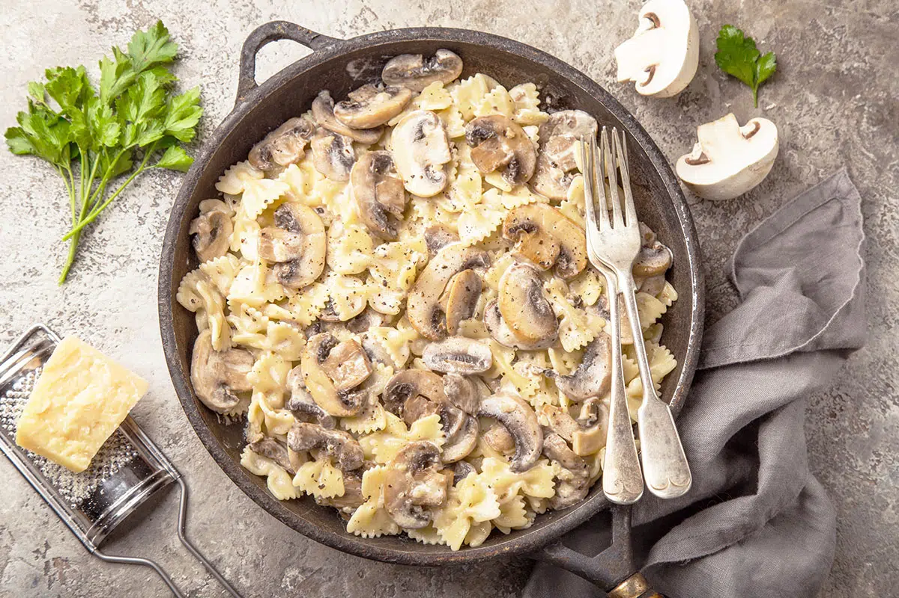

Creamy Mushroom Pasta

creamy souse and mashrooms taste
This Creamy Mushroom Pasta is packed with flavor,
buttery caramelized mushrooms, the most silky-smooth
sauce, all made in under 20 minutes.
ingredients:
- Bowtie Pasta
- Mushrooms
- Butter + Olive Oil
- Garlic
- Milk
- Parmesan Cheese
- Cream Cheese
- Spinach
directions:
How To Perfectly Saute Mushrooms:
- Clean and Slice. Wipe your mushrooms off with a damp towel
or quickly rinse and dry well. You don’t want excess water on
them because it will take longer to cook and contribute to soggy
mushrooms. Slice them into thick slices – mushrooms shrink a ton
when cooked and thicker slices cook the best.
- Heat Oil/Butter. In a large saute pan, add your oil and butter and
turn the heat up to medium high. You want it to get hot before you add
your mushrooms. The reason that the oil/butter combination is so important
is because the oil allows for cooking at a higher heat allowing the moisture
to evaporate quickly. This is the key to caramelization.
- Cook. Add mushrooms to your pan and make sure you allow some space between
the mushrooms. If you overcrowd them, the moisture will steam the mushrooms
instead of searing and make them soggy. Cook for 4-5 minutes before touching
them. Then give them a good stir so that the other side cooks and gets nice and brown.
- Finish. You will know your mushrooms are done when all of the liquid has evaporated.
Your mushrooms should look golden brown and caramelized.
How to Make Creamy Mushroom Pasta:
- Cook pasta according to package directions and drain
- Saute mushrooms using the above method. Once they are done, turn the
heat down to medium and add garlic and 1/3 of the broth to deglaze the pan.
Cook for another minute.
- Add milk and salt; stir to combine. Add the cooked pasta and the remaining broth.
- If you are adding spinach, cut using a chiffonade method. To do this,
stack the spinach leaves on top of each other and roll them into a ‘burrito’.
Using a sharp knife, make very small cuts creating strips. Add to pan.
- Stir in Parmesan and cream cheese; cook another 2-3 minutes or until heated
through and the cheese is melted. Serve warm and enjoy!